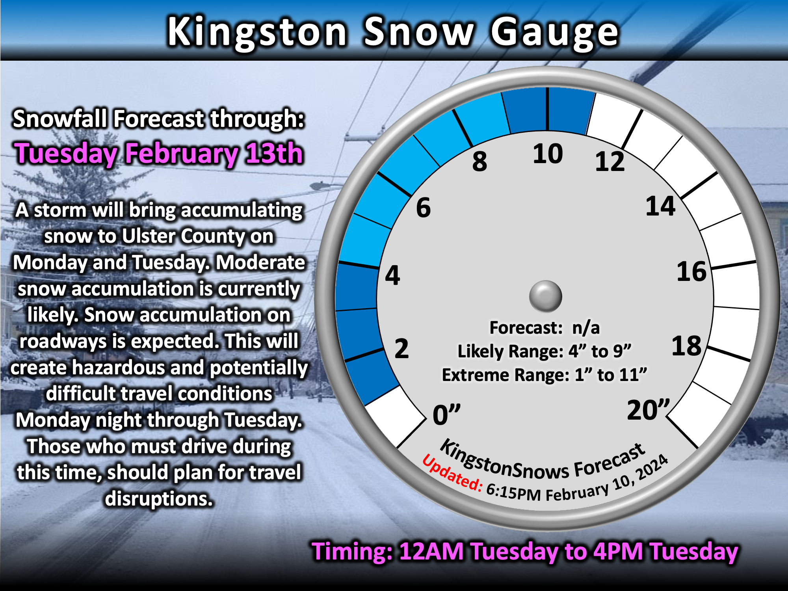

Storm splits county
School Forecast
for Wednesday February 14th
Last updated: 8:30AM Monday February 13, 2024
| 0% (Nope) |
|---|
| 0% (Nope) |
|---|
| 0% (Nope) |
|---|
___________________
8:30AM Tuesday Update
Ulster County was so on the edge with this storm that it literally cut the county in half. While there is no snow on the ground in Kingston, just to the south in New Paltz there is a solid coating of snow.
As a result, while most school districts in Ulster County issued delays, the southern districts upgraded to closings while the northern ones did not. And as for the heavier snow that was initially forecast - that's now down in Orange County where some sports are approaching double digits worth of snow accumulation.
Radar suggests that the snow has reached its northern extent and will begin gradually receding for the rest of the morning. Lingering flakes may persist, but snow intensity is unlikely to increase before the storm departs.
___________________
10:00PM Monday Update
If it does manage to snow in Kingston tomorrow, it is still most likely to begin between 3AM and 7AM. Any snow would be likely to end between 12PM and 4PM. Based on all of the new data today and this evening, Kingston may still experience up to 3 inches of snow, but the extreme range is now 0 to 6 inches.

As mentioned earlier, some Ulster County schools may close tomorrow, especially those across southern Ulster County. However, if the current trend persists overnight, and if snow has not begun falling by 5AM, then it would not be a surprise to see some schools issue delays and then wait to see if conditions actually do deteriorate later in the morning. If snow develops by 7AM, schools that issue delays will likely upgrade to a closing, otherwise they may proceed with classes if it continues to look like the storm may spare the region. There is about a 10% chance of no school impact in Kingston.
___________________
5:00PM Monday Update
There have been significant changes to the forecast for tomorrow. Over the past four days we have been actively tracking a potential winter storm. Data over the past four days had been consistent in spreading a swath of moderate to heavy snow across parts of New York. As discussed in previous updates, the main uncertainty with the forecast had been in where the swath of snow would be located. There had been some subtle shifts over the past three days, but the general trend had been for the Mid-Hudson Valley to be impacted by the main band of snow, and so confidence in this scenario progressively increased. However, over the past 24 hours, there has been a significant shift in the data - a bigger shift than have seen at any time over the past four days. The new shift in data now suggests that the main band of snow may stay well to our south toward New York City and Long Island. This scenario would place Ulster County and Kingston on the northern edge of the storm and result in significantly less snow than previously forecast. It MUST be noted that some of the new data suggests that Kingston may now be too far north for any appreciable snow accumulation.
The Forecast:
Currently, the National Weather Service still has a Winter Storm Warning in effect for Ulster County and Kingston from 1AM to 7AM Tuesday. The Winter Storm Warning is anticipation of
of 4 to 8 inches of snow. That being said, if the current trend holds, then Kingston is likely to recieve less than this. If the storm passes close enough to produce snow in Kingston,
then snow is most likely to begin between 3AM and 7AM. Snow would end between 1PM and 4PM. Based on the new data from the past 24 hours, the KingstonSnows forecast has been adjusted downward,
but still remains above some of the least snowy data.

The Impacts:
Drivers should still be prepared for snowy roads tomorrow. Travel may be hazardous. As far as schools go, based on the current forecasts, it is most likely that Ulster County schools will close tomorrow.
However, if the current trend persists overnight, and if snow has not begun falling by 5AM, then it would not be a surprise to see some schools issue delays and then wait to see if conditions actually do deteriorate later in the morning.
If snow develops by 7AM, schools that issue delays will likely upgrade to a closing, otherwise they may proceed with classes if it continues to look like the storm may spare the region.
___________________
12:00PM Sunday Update
The Forecast:
Tuesday's storm is currently organizing over Texas and Arkansas, and confidence in an impactful snow event continues to increase. As mentioned yesterday,
main source of uncertainty has been the eventual placement of a band of heavy snow over the region. Trends over the past 24 hours have been to have this
swath of heavy snow closer to Ulster County. As a result, the confidence in heavier snow has increased. Snow is expected to start between 12AM and 5AM Tuesday.
Snow will fall steadily with periods of heavy snow during the day on Tuesday. Snow should end by mid-afternoon on Tuesday. Currently, 6 to 11 inches of snow is likely.
The Impacts:
This will be a plowable snow event for the region. Expect snow covered roads which will make travel hazardous to difficult on Tuesday. The snow will also be
fairly wet - this will make shoveling difficult, but should be good if you're looking to make some snowmen or snowballs.
___________________
7:00PM Saturday Update
In keeping with our very warm winter that I mentioned in last night's update, Poughkeepsie set a daily record high temperature of 59 degrees today, beating the previoous record by 2 degrees. Not to be out-done, Albany also decided to get in on the warmth by reaching 60 degrees, topping their previus record by a whopping 7 degrees. The Albany record was set 69 years ago. Warmth aside, all eyes on next week's snowstorm.
Since the last update, confidence has increased for an impactful snow event Monday night into Tuesday. A coastal storm will develop and push a swath of snow across New York. Snow is most likely between 12AM Tuesday and 4PM Tuesday. The main source of uncertainty is the placement of the heaviest snow in the swath. Currently, moderate accumulations of 4 to 9 inches are currently likely around Kingston. However, shifts in the eventual snow band placement could still result in higher or lower totals outside of that range. As it did overnight, the range of possibilities should continue to narrow over the next two days. Regardless of exact totals, it is becoming increasingly likely that travel on roads will be hazardous to difficult Monday night through Tuesday. School cancellations are likely on Tuesday.
___________________
10:45PM Friday Update
It has been a lackluster winter so far here in the Hudson Valley. So far this winter, Kingston has picked up about 14.5 inches of snow. This is well below normal for this point in the year. The lack of snow has been due to warmer than normal temperatures. Since December 1st, the average temperature at the Dutchess County Airport has been 34.7°F. This ties for the third warmest start to winter since 1949, and is on par with the lack luster winters of 2012 and 2016. Both of those years also had strong El Nino weather patterns, and it is not surprising that the current El Nino has impacted this winter. This winter has also been the wettest since 1974 with just over 12 inches of precipitation having fallen - roughy 90% of this has been rain.
The Forecast:
With all that seasonal context said, a potential snow event currently poses a threat for early next week. Like the past several weeks, this weekend will be
relatively mild with temperatures approaching 50 degrees on Saturday and Sunday afternoons. Normally afternoon temperatures this time of year should be in the
mid-30s. It'll be cloudy Saturday and Sunday, but should remain mainly dry. By Monday, a storm system that is currently over the northwestern US will be approaching
New York. Temperatures Monday are likely to reach the 40s during the afternoon before dropping to near 30 after sunset. Currently, snow is likely to develop after 7PM
Monday. Snow is likely Monday night with temperatures remaining near 30. Snow Tuesday morning is likely to taper off by Tuesday afternoon. At this time, accumulating snow
appears likely, however, it is too early for exact amounts. Dry and cooler weather is likely to linger through the end of next week.
The Impacts:
The impacts of next week's storm will depend on the track of the storm and how much snow eventually falls. That being said, some accumulating snow is currently likely
between Monday night and Tuesday evening, impacting roadways. This timing, if it holds, is not likely to impact school classes on Monday, but may impact after school activities. This timing,
is also likely to result in school cancellations on Tuesday, or possibly school delays if the storm ends much faster than currently expected and only drops a limited amount of snow.
Any lingering affects into Wednesday will depend on how much snow falls on Tuesday - currently, a very low chance of delays on Wednesday.
Next Update:
Saturday
-Ethan
KingstonSnows | Kingston, New York
Website built by Ethan Burwell